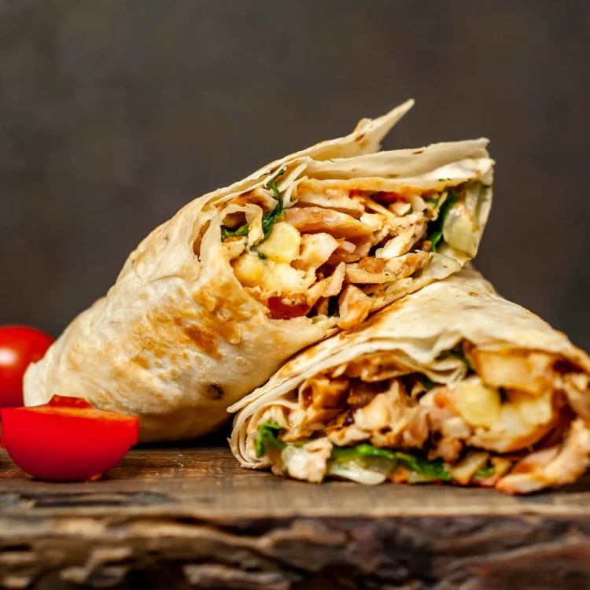

Shawarma

Shawarma is a Middle Eastern dish made of meat (usually chicken, beef, or lamb) that is marinated,
then slowly roasted on a spit and shaved off into thin slices. The meat is
typically wrapped in a pita bread with vegetables
like lettuce, tomatoes, onions, and cucumbers, and topped with sauces like tahini or hummus.
Shawarma is a popular street food in many parts of the world.
Ingredients
- Boneless chicken
- malt vineger
- Plain Yogurt
- Spices for marinade
- Pita bread
- Lettuce
- Tomatoes
- Cucumber
- Garlic
- Ground cumin
- Ground coriander
- Ground cloves
- Salt
- Pepper
- Lemon juice
- Extra virgin olive olive
- Fresh parsley
Steps
- Cut boneless chicken thighs into 1 ½ inch pieces and set aside
- Prepare the marinade by mixing malt vinegar, plain yogurt, vegetable oil, and spices
(paprika, turmeric, cinnamon, cardamom, cumin, or baharat) in a bowl. Add the chicken
pieces to the marinade and mix well. Cover and refrigerate for at least 30 minutes.
- Preheat the oven to 425°F (218°C).
- Spread the marinated chicken pieces on a baking sheet and bake for 20-25 minutes or until
golden brown.
- While the chicken is baking, prepare the garlic sauce by mixing minced garlic, ground cumin,
ground coriander, ground cloves, salt, pepper, lemon juice, and extra virgin olive oil in a bowl.
- Remove the chicken from the oven and let cool.
- Remove the marinade from the oven and let cool.
- Remove the pita bread from the oven and let cool.
- Remove the chicken from the oven and let cool.